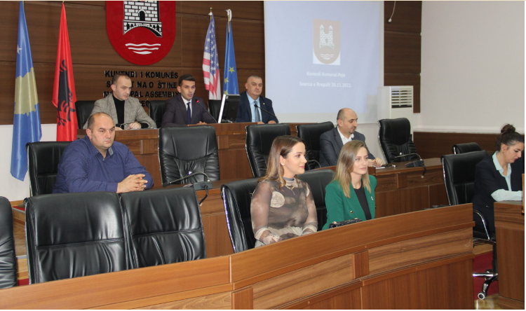
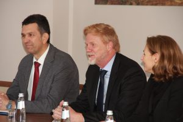

Hapja zyrtare e fushatës “16-të,
ditë aktivizëm kundër dhunës në baza gjinore”
Komuna e Pejës, përkatësisht Drejtoria për Mirëqenie Sociale ka filluar aktivitetet e saj sensibilizuese në kuadër të fushatës globale kundër dhunës në baza gjinore.
Në aktivitetet sensibilizuese kanë qenë të pranishëm Kryetari i Komunës së Pejës, z.Gazmend Muhaxheri dhe Drejtoresha për Mirëqenie Sociale në Komunën e Pejës, znj.Albulena Mujaj – Bajraktaraj.
Drejtoresha Mujaj – Bajraktaraj theksoj se Komuna e Pejës, përkatësisht Drejtoria për Mirëqenie Sociale, mbështet fushatën globale kundër dhunës në baza gjinore. Aktiviteti ka filluar me
shënimin e Ditës Ndërkombëtare të Gruas,
përbëhet nga 16-të, ditë aktivitete dhe përfundon më dhjetor në Ditën Ndërkombëtare për të Drejtat e Njeriut.
DUAJ, MOS LËNDO
… bashkohu edhe ti.
Takimi i rregullt i Kuvendit Komunal të Pejës
Kuvendi Komunal në Pejë mbajti takimin e rregullt të kryesuar nga z.Rexhep Kurtbogaj, ku në prezencën e Drejtorëve, mediave dhe qytetarëve të interesuar u debatua për disa pika të rendit të ditës. Pikat e rendit të ditës, të cilat janë shqyrtuar dhe aprovuar për procedim të mëtutjeshëm janë: -Shqyrtimi i normës tatimore për tatimin në pronë në Komunën e Pejës; -Shqyrtimi i nismës së Kryetarit të Komunës së Pejës për bashkëpunim ndërkombëtar komunal në mes të Komunës së Pejës dhe Komunës Eger të Republikës së Hungarisë; -Shqyrtimi i nismës së Kryetarit të Komunës së Pejës për bashkëpunim ndërkombëtar komunal në mes të Komunës së Pejës dhe Provincës Kozenca të Republikës së Italisë; -Shqyrtimi i propozimit të DÇPJ dhe Kryetarit të Komunës për këmbimin e pronës së paluajtshme komunale me pronën e personit fizik, z.Eshref Kelmendi nga Peja me qëllim te formimit të rrugës, hapjen e shtegut dhe vendosjen e urës mbi lumin “Lumbardhë”, sipas PZHK, si interes publik në Pejë; -Shqyrtimi i propozimit të Drejtorisë për Administratë dhe Kryetarit të Komunës për kompensimin e përfaqësuesve të Këshillave Lokal për vitin 2022. Pyetjet dhe propozimet lidhur me punën e Komunës, të ngritura nga anëtarët, në atë renditje, siç janë pranuar. Çështje të ngritura në mbledhje nga udhëheqësi, apo nga anëtarët e Kuvendit.

Kryetari Muhaxheri priti në takim znj.Rostocka dhe z.Madsen
Kryetari i Komunës së Pejës, z.Gazmend Muhaxheri me bashkëpunëtorë priti në takim Shefen e Misionit të IOM-it, në Kosovë, znj.Anna Rostocka dhe Shefin e Bashkëpunimit të Zyrës së Bashkimit Evropian në Kosovë, z.Johannes Madsen. Kryetari Muhaxheri i falënderoj znj.Rostocka dhe z.Madsen për furnizimin me pajisje mjekësore në Qendrën e Mjekësisë Familjare në Vitomericë, i cili është projekt i komunitetit i mbështetur nga Stabilizimi i Komunitetit të BE-së, Programi IV (EU-CSP IV), që është një program i financuar nga BE dhe i menaxhuar nga Zyra e Bashkimit Evropian në Kosovë, në partneritet me Ministrinë për Komunitete dhe Kthim (MCR). Pas takimit në zyrë kanë vazhduar në Qendrën e Mjekësisë Familjare në Vitomericë dhe në “Qendrën për Jetë të Pavarur”. Drejtori i Shëndetësisë në Komunën e Pejës, z.Petrit Loci i ka pritur në Qendrën e Mjekësisë Familjare në Vitomericë, ku është bërë inaugurimi i Dhomës së Stomatologjisë. Inaugurimin e Dhomës së Stomatologjisë në Qendrën e Mjekësisë Familjare në Vitomericë e kanë bërë Kryetari i Komunës së Pejës, z.Gazmend Muhaxheri, Shefja e Misionit të IOM-it, në Kosovë, znj.Anna Rostocka dhe Shefi i Bashkëpunimit të Zyrës së Bashkimit Evropian në Kosovë, z.Johannes Madsen. Po ashtu, gjatë ditës në Vitomericë kanë vizituar “Qendrën për Jetë të Pavarur”, ku janë pritur nga Drejtoresha ekzekutive e OJQ “Qendra për Jetë të Pavarur”, znj.Fitore Cena – Haxhihasani.
Koncerti solemn solistik
Në kuadër të aktiviteteve të organizuara nga Komuna e Pejës, përkatësisht nga Drejtoria për Kulturë, Rini dhe Sport për nder të 28 Nëntorit – Ditës së Flamurit Kombëtar, në teatrin profesionist “Istref Begolli” është mbajtur koncerti solemn solistik i përgatitur nga Universiteti “Haxhi Zeka”, përkatësisht Fakulteti i Arteve.
Programi i koncertit solemn solistik:
1.Khachaturian- Waltz from the Masquerade Duo pianstike: Alba Muçolli Dehiri-Piano dhe Syzana Jakupi-Piano;
2.F.Chopin -Fantasie – op.49 Besart Shala-Piano;
.Këngë të përpunuara shqipe – Kah pranvera njëzet e pesë gërsheta.
Mysafire:
Soliste Veronika Zimaj dhe Kori i grave “Canta Peja”;